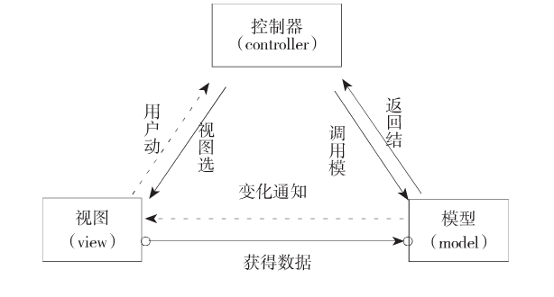
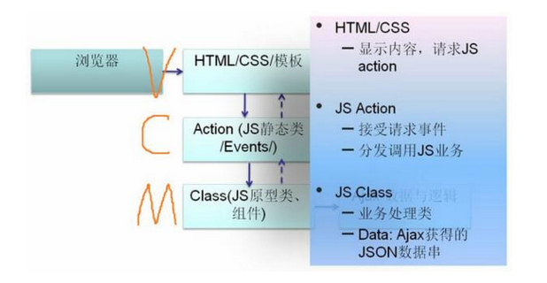

说起前端框架，我也是醉了。现在去面试或者和同行聊天，动不动就这个框架碉堡了，那个框架好犀利。
当然不是贬低框架，只是有一种杀鸡焉用牛刀的感觉。网站技术是为业务而存在的，除此毫无意义，框架也是一样。在技术选型和架构设计当中，脱离网站业务发展的实际，一味的追求时髦新技术，可能会适得其反，将网站发展引入崎岖小道。就好像一个日均pv只有几百的小型电商网站，却要大喊“某宝就是这么搞的”，然后搭建应用服务器集群，使用分布式文件系统和分布式数据库系统...等巴拉巴拉的一堆用来处理高并发，海量数据访问的手段。我想说，有意义吗？
前端框架的理解误区
网站的价值在于它能为用户提供什么价值，在于网站能做什么，而不在于它是怎么做的，所以在网站还很小的时候就去追求网站的架构框架是舍本逐末，得不偿失的。前端框架同理，如果是一个简单的页面型产品，应用只是依赖服务器来生成Web页面和视图，并且只需要使用一些简单的Javascript或者JQuery来使应用更加具有互动性，那么一个JQuery前端类库就可以了，真的没必要用上一些高大上的框架。
当然，框架的确是很有用的，重点是我们要知道什么时候该用什么框架。大公司大项目的经验和成功模式固然重要，值得学习借鉴，但我们不能因此变得盲从。只有深刻去理解前端框架，知道什么时候该用什么什么框架解决什么问题，才能有的放矢，直击要害。
前端框架与前端类库的区别
使用框架前，我觉得很重要的一点是弄清类库（诸如JQuery）和框架（诸如angularJS)的区别在何处。
简单而言，类库，解决的是代码或者是模块级别的复用或者对复杂度的封装问题，例如将一个解决复杂问题的功能模块封装成一个函数，提供一个简单的接口。库它是一种工具，它提供了很多封装好的方法，用与不用取决于我们自身，即使用了也不会影响我们呢的代码结构。
而框架，更多的是对模式级别的复用和对程序组织的规范。这里的模式是指比如MVC，为了实现M和V的解耦，把复杂的耦合关系由经常变化的业务代码转移到不经常变化的框架内部消化。是面向一个领域来提供一套解决方案，提高开发效率，如果我们选择了使用某框架，就应该遵循该框架所规定的规则。
二者最主要的区别是：JQuery以DOM操作为中心，框架，准确来说是MVC框架，是以模型（model）为中心，而DOM操作是附加的。所以，以模型为中心最终达到的目的是带来一整套工作流程的变更，使得后台工程师可以编写前端的模型代码，把后台与前端打通，交互设计师处理UI跟模型的互动关系，UI设计师可以专注、无障碍的处理HTML源码，把它们以界面模板的形式提交给交互工程师。这一整套协作机制能大大提高开发效率。使用MVC框架使得前端任务更好的被解耦。
前端MVC框架思想
我们知道，传统的MVC模式将一个应用划分为——模型层（model）、视图层（view）、控制层（controller）。他们在应用系统中担当不同的角色，完成不同的任务。
- Model：即数据模型，用来包装和应用程序的业务逻辑相关的数据或者对数据进行处理，模型可以直接访问数据。
- View：视图用来有目的显示数据，在视图中一般没有程序上的逻辑，为了实现视图上的最新功能，视图需要访问它监视的数据模型。
- Controller：控制器调控模型和视图的联系，它控制应用程序的流程，处理事件并作出响应，事件不仅仅包括用户的行为还有数据模型上的改变。通过捕获用户事件，通知模型层作出相应的更新处理，同时将模型层的更新和改变通知给视图，使得视图作出相应改变。因此控制器保证了视图和模型的一致性。

那么在前端中的表现。前端MVC中各部分的职责：

我对前端的View的理解是，与页面上元素直接相关的部分都属于View。包括html，CSS和一部分直接控制页面元素的JS。可以从Model中得到数据，并将其显示到页面上。而关于数据的变更与请求，则统统交给Controller处理。
那么Controller呢？作为Model和View的粘合剂，Controller将View方面的请求转发给合适的Model，在必要时也会去更新View。而Controller本身也可以作为Model的观察者，获取Model的变更。而作为Controller本身，就不应该有涉及到页面元素的代码了。
最后谈谈Model，与后端的沟通、AJAX请求以及对数据的处理都属于Model的工作。Model本身不知道谁是View，谁是Controller。它只提供一些方法供View和Controller调用，并且将变更通知给它的观察者View或Controller。显然，Model与页面元素之间也解耦了。
虽然基于MVC模型的框架之间也有很多不同之处，但是总体而言，Model负责保存vier需要的数据以及数据处理逻辑，例如读写，更新，删除，验证，转换等。View负责接收并显示Model提供的数据以及接收用户的输入，并且响应事件，Model更新后及时将更新反馈回用户。Controller处理业务逻辑和事件逻辑。
知己知彼，对症下药
在前端框架和类库越来越丰富的今天。选择一款对的框架或类库就显得尤为重要了，我觉得没必要盲目跟风，看见什么框架火就屁颠屁颠跑去啃一个星期，然后因为项目工作上用不到，几个月之后又全忘光了。
所以我觉得重要的是把基础打扎实，重点是去了解各个类库与框架的作用，某类框架着重用于解决什么问题，然后在项目需要用到时候再去研读API才是上策。
最后，我们要清楚MVC在前端开发中的应用具有的局限性，简单的项目如果使用MVC框架会可能导致项目变得更加复杂。当然随着Web前端的复杂度不断增加，前端MVC框架的不断发展，相信在未来的应用软件类复杂产品当中，MVC框架一定会给前端工作带来效率上的飞跃。
以上只是我对前端框架和类库一些浅显的认识，不喜勿喷，更希望您能提出更好的学习框架和类库的方法。共同进步，共同学习。
文中若有技术层面的错误还请斧正，误人子弟实乃罪过。